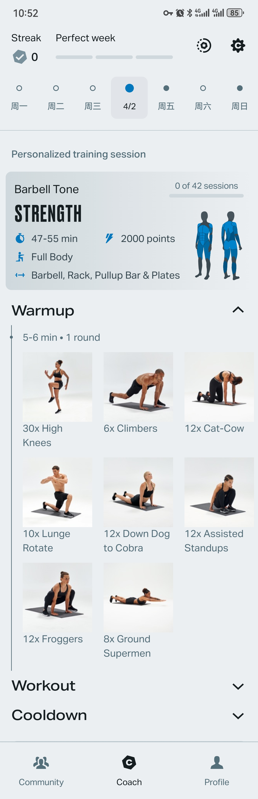

01
AI Coach 的功能定位
我不想把 AI Coach 做成像 Keep 智能体那样什么功能都接一点的入口，而是更在意它的边界问题。对我来说，它首先应该是一个定位清晰的咨询型 AI 教练智能体，核心职责就是生成个性化训练方案、调整训练计划，并解答健身和健康类问题。这样设计的重点不是让它看起来功能很多，而是让用户一开始就知道它到底负责什么，也让 AI 的角色更贴近真实教练的工作方式。
AI 产品作品集
AI 健身 Agent 产品分析与方案设计
项目总览
这份作品集想展示的，不是我做了多少页面，而是我如何把真实用户反馈推进成产品判断。我先研究 Keep 与 Freeletics 的用户评价，筛选高频痛点，再收敛为界面布局、交互逻辑、数据三个核心问题，并借助 AI 把抽象问题转成可视化界面，继续推进到产品思考、可落地办法和功能优先级。
研究来源
5+覆盖华为、安卓、苹果应用商店，以及 Reddit、评价网站、Revolet 等海外渠道。
核心问题
3我从大量反馈里收敛出界面布局、交互逻辑、数据三部分最值得展开的问题。
输出链路
4从痛点分析、界面探索、产品思考到优先级判断，形成完整输出链路。
本页重点
我想证明的不是我会不会做界面，而是我能否完成从用户痛点识别、问题收敛，到方案表达与优先级判断的一整条产品链路。
研究样本
展示结构
这一部分只展示我的工作流程，用一条清晰的四步路径说明我是怎么把问题推进成方案的。
步骤 01
分析核心痛点先从真实评价里筛选高频问题，找到最值得展开的核心痛点。
步骤 02
设计核心功能围绕核心问题设计 App 功能，用 AI 帮助我持续探索和验证想法。
步骤 03
思考落地方案继续往下推进功能怎么落地，以及怎样优化真实场景下的使用体验。
步骤 04
判断功能优先级结合实现难度和产品阶段，决定哪些核心功能先落地，哪些放到后续迭代。
第一部分
用户痛点问题与我的思考界面展示
当前播放 · Freeletics
用户痛点问题
我的思考
第二部分
我设计的 APP 界面介绍这一部分展示的是我之前做的 App 原型。我想通过这个界面，把前面的思考真正落到可交互的产品结构里，而不是只停留在概念描述。
我不想把 AI Coach 做成像 Keep 智能体那样什么功能都接一点的入口，而是更在意它的边界问题。对我来说，它首先应该是一个定位清晰的咨询型 AI 教练智能体，核心职责就是生成个性化训练方案、调整训练计划，并解答健身和健康类问题。这样设计的重点不是让它看起来功能很多，而是让用户一开始就知道它到底负责什么，也让 AI 的角色更贴近真实教练的工作方式。
Keep 给我的最大感受是功能太多、界面太复杂，所以我想先把首页主线收清楚。对我来说，这应该是用户最先看到的界面，一进入页面就能看到今天还需要补充多少营养，以及今天的训练日程安排了什么内容。训练时长、体重、PR、营养表和训练日程这些数据本身也能给用户很直接的反馈，让用户知道自己的进展。更重要的是，我希望它不仅是一个首页，也是一个承接页，前面承接训练计划的展示，后面承接营养补充和执行环节，把训练过程真正收成一个闭环。这样一来，健身这种长期目标就能被拆成今天要完成的具体行动，用户的目标感会更强，也不需要在多个页面之间来回切换，让整个首页更像教练安排任务的工作台，而不是让用户重新理解系统。
这一块我更想做成用户的数据反馈区。训练时长用来记录用户的训练投入，体重可以持续更新，并通过折线图看到变化趋势；PR 也可以更新，让用户直观看到自己力量上的进步。对我来说，这些数据不只是展示结果，后面也会和训练计划调整、推荐重量这些能力衔接，在数据模块里我会继续展开。
营养表这一块我做成了更直观的进度条形式，把用户今天需要补充的蛋白质、碳水、脂肪和纤维写清楚，也会提示今天还差多少。因为健身不是只靠练，营养补充本身就是很重要的执行环节，所以我希望用户一进入首页就能看到自己的饮食进度。
训练日程这一块负责把今天要做的训练内容直接展示出来，让用户不用再回到别的页面找计划。对我来说，日程首页最重要的不是堆很多入口，而是把训练和饮食两个最关键的执行环节放在一个界面里，把健身这种长期目标收成今天要完成的具体任务，让用户目标感更强，也减少来回切换。
我不想把 AI Coach 做成什么都接一点的智能体入口，而是更在意它的边界问题。它首先应该是一个定位清晰的咨询型 AI 教练智能体，而不是一个泛化聊天机器人。
我给它定义的核心职责是三件事：生成个性化训练方案、调整训练计划、解答健身和健康类问题。这样用户一开始就能知道它到底负责什么，不会像竞品那样功能很多但定位模糊。
我把 AI Coach 放在导航栏中间，是希望它从视觉上就是产品核心。对我来说，这一块才是真正的 AI 落地，因为用户关于训练、营养和身体状态的问题都可以在这里被承接和转化成后续动作。
对我来说，营养补充不是附属功能，而是训练效果的一部分。很多用户练了，但吃得不够或者吃得不对，最后训练效果和状态都会打折扣，所以首页必须把这一环节承接住。
我把它做成了动态进度条的形式，把用户今天需要摄入的营养物质、已经补充了多少、还差多少都写清楚。这样用户不需要先理解复杂规则，而是直接看到今天的饮食执行情况。
我不想把它设计成死板的固定食谱，而是提供一个清晰的营养目标和补充标准，让用户先知道今天还差多少、该补什么，至于具体吃什么，可以由用户自己选择。我补了高营养食物推荐，是希望先把营养模块做成一个有标准、能辅助决策、但不过度控制用户选择的执行支持工具。
这些延展玩法不应该一开始就和核心功能一起堆上去，而是要等用户生成训练计划、调整计划、查看日程首页和执行营养表这些核心流程先形成稳定闭环，再继续往后迭代。对我来说，只有核心内容先跑顺了，后面的新玩法才有意义。到那个阶段，可以再做健康餐菜单、CV 食材识别、基于现有食材的一餐搭配建议，把营养模块从基础记录和提醒，升级成更主动、更贴近真实生活场景的辅助能力。
第三部分
我为什么觉得这套界面更像 AI 教练的工作方式这一部分是对前面界面设计的总结。我想说明的不是功能多不多，而是为什么这套界面结构能够更贴近真实教练的工作逻辑。
对我来说，真实教练会根据用户情况生成训练计划，也会根据状态调整计划；在训练过程中提供指导和监督；在训练之外还要计算营养需求、提醒饮食执行。只有训练和饮食一起被承接住，学员的训练效果才更稳定。健身里常说“3 分靠练，7 分靠吃”，如果吃不到位，训练效果也会大打折扣。
我把 AI Coach 定义成咨询型智能教练，就是希望它先把生成个性化训练计划和调整计划这两件事做好。对真实教练来说，计划不是一次性给完就结束，而是会随着用户状态、器材和训练表现继续调整。
日程首页承接的是今天的训练执行。用户一进入页面就能看到训练时长、体重、PR 和当天训练内容，这些信息既能提供反馈，也能把长期目标收成今天的任务，让首页更像教练每天安排和监督训练的工作台。
营养补充是健身教练非常重要的工作环节。教练会计算学员需要补充多少营养物质，也会监督饮食执行。我把营养表放进首页，就是希望这部分不被割裂，让训练和饮食一起形成更完整的执行闭环。
所以我这样设计，不是为了把功能摆得更多，而是想让 AI 教练真正承担起教练的工作方式：前面承接训练计划，中间承接训练执行，后面承接饮食补充和反馈，让产品更像一个会陪用户完成目标的智能教练，而不是一个只会堆功能的健身 App。
第一部分
用户痛点问题与我的思考用户痛点问题
我的思考
第二部分
我针对交互逻辑问题的产品思考与可落地方案这一部分我不只是停留在指出竞品问题，而是进一步把这些问题推进成更符合真实训练场景、也更容易落地的交互方案。
第一部分 / 竞品训练录屏
当前播放 · Freeletics切换到下一个动作时先停留在当前界面，给用户时间找器材、找场地、调整状态。
不是系统自动开始训练，而是等用户准备好之后点击开始训练按钮再进入训练界面，这样也能给健身房里等待器材、等别人练完的情况留出空间。
开始前用 6 到 10 秒讲清楚当前组数、训练进度和动作注意点，再进入 3、2、1 的训练节奏。
训练过程中更适合提醒节奏、核心紧绷和发力感受，而不是实时细纠动作。
动作结束后的休息阶段，AI 教练再讲练到了哪块肌肉、对运动表现有什么帮助，让体验更像真实教练在陪练。
Summary
对我来说，AI 语音教练不应该只是一个会计数、会播报的功能，而应该更接近真实教练的带练方式。它要理解训练场景里的器材、准备、安全和节奏，也要让用户在训练过程中感受到被引导、被陪伴和被监督。
真实的教练不会在动作切换时立刻逼着用户开始训练，也不会在用户动作已经做起来之后才突然纠正细节。更合理的方式是先给用户时间准备器材和状态，再在开始前讲清楚组数、进度和动作要点，训练中只做节奏与发力提醒，休息阶段再讲解动作和肌群。这样整个过程才更像真实教学，而不是机械播报。
如果进入真实落地，前期我会先做三件事：动作切换时暂停、播报当前组数和训练进度、在训练过程中做节奏提醒。这三个点已经能体现产品亮点，也能明显改善用户体验。但一开始不适合做得太复杂，否则实现难度会太高。更完整的开始前讲解、休息阶段陪伴和更强的语音互动，我会放到后续版本继续迭代。
Keep 的问题是训练计划一旦生成后几乎就固定死了。用户如果因为状态不好、受伤、器材受限，或者当天无法正常训练，就很难根据真实情况去调整训练内容和难度。这样不仅容易让用户产生挫败感，也会影响训练效果，严重时甚至可能带来受伤风险。Freeletics 虽然支持调整，但调整出来的结果并不稳定。有用户反馈原本练胸、肩、背的训练，在调整难度之后却变成了练核心和腿部，这更像是在换训练部位，而不是在合理调整难度；同时也会出现调整后要嘛太难、要嘛太简单的问题。我会怀疑这背后和课程难度细分不够、课程数量不足、可替换方案太少有关。
对我来说，课程设计首先要把难度分层做细，比如纯小白、初阶、中阶、进阶这些层级都要被清楚地区分开，这样不同阶段的用户在进入计划或调整难度时，才会有自然的承接关系。第二点是课程种类一定要足够丰富。每一个训练部位都应该有很多不同的训练方式，既要有横向的广度，去承接不同器材、不同场景和不同限制条件；也要有纵向的深度，去承接同一目标下不同强度和不同阶段的训练需求。只有课程内容本身足够丰富、足够细，后面的训练计划生成和调整功能才会更稳定，用户体验也会明显更好。
我的想法是用课程 ID 和属性标签去做绑定。属性标签会按优先级去定义，比如力量训练、上半身、胸部、器材、推、难度等。这样用户在训练计划里提出替换需求时，系统不是整套推翻，而是可以按照属性去找更合适的课程内容。
这样设计的好处是，训练目标可以保持稳定，但执行路径可以根据真实情况灵活调整。比如同样练胸、同样的难度下，可以从杠铃换成哑铃，再换成斯密斯，而不是直接把整个训练方向打乱。这样用户会感觉计划被优化了，而不是被推翻了。另一方面，Freeletics 也有用户反馈训练计划会越来越单调，动作来来回回就是那几个。用这种设计方式，就可以在保持目标和难度不变的前提下，切换不同器材和不同训练方式，让内容更丰富，也更不容易让用户觉得无聊。再往前一步，这套属性体系也能让 AI 教练把计划调整做得更自然。它不是凭感觉改计划，而是可以根据用户的状态、器材条件和训练目标，按属性去做动态调整，这样会更符合真实教练的教学方式。
这套方法不是简单替换动作，而是在不打乱训练目标的前提下，让计划像真实教练一样被优化。用户看到的不是“今天这套练不了就算了”，而是“系统会根据我的情况给出更合适的执行方案”。
这类用户膝盖承压更大，不太适合跳跃类动作。可以优先替换掉带跳跃属性的训练计划，换成不跳也能达到目标的方案。
有些用户对特定动作不太习惯，比如跪地做腹部动作，就可以替换成同目标但更容易接受的动作，减少心理负担。
这类用户可以直接按难度属性去升降级，同时尽量保持其他属性不变，让训练计划的调整更流畅、更自然。
比如今天原本练肩，但肩部不舒服，就可以临时换成腹部或腿部训练。Agent 也可以优先提醒用户先休息、放松肌肉或做拉伸。
加班、临时有事、去不了健身房时，系统可以切到更短或更适合当下条件的训练内容，也能承接住用户的情绪。
我会优先展示两周训练计划，用户如果有调整需求，就把这两周里的动作后移调整，而不是把整个大计划表全部打乱。
User pain points
My understanding
Training data
对我来说，训练数据最重要的不是把页面做得很花，而是让用户在训练结束后立刻看到一组同步完成的数据反馈。用户一眼就能知道今天练了多久、完成到了哪一步、身体和力量有没有变化，这样今天的训练成果才会被真正感知到。
训练数据对用户来说，最重要的是结束训练后有反馈。用户不是只想看到一串数字，而是想确认今天的努力有没有被认真记录。训练时长、完成进度、体重和 PR 能被清楚同步和展示出来，用户才会更容易感受到自己的进展，也更愿意继续练下去。
等训练数据稳定之后，我会继续做更有记录感和分享感的设计。比如训练结束时，用户的肌肉状态往往最好，这时候上传一张训练后的状态照片作为数据背景板，会很适合用来记录当天状态，也方便分享。这样数据页就不只是统计页，还会更有纪念感和传播感。
Nutrition data
对健身产品来说，饮食是很重要的执行环节。训练之外，用户最需要知道的就是今天还差多少营养没补上。饮食数据越直观，用户就越容易安心执行，AI 教练的监督感也会更强。
饮食数据打稳之后，后面就可以继续扩展高营养食物推荐、健康餐菜单、基于现有食材的一餐搭配建议，甚至是 CV 食材识别。这样饮食模块就不只是记录，还能慢慢升级成更主动的辅助能力。